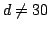

(July 2007)
Even since I was a kid, I loved puzzles. One of the reasons I got involved with maths and computers was probably this strange attraction to the "puzzled" state of mind - stress, frustration, and then... the incredible elation of figuring it out...
One of the geometry puzzles I've found that was particularly enjoyable was the crossing ladders puzzle:
Figure 1: The crossing ladders puzzle
As shown in figure 1, two ladders are standing on opposite walls. They meet each other somewhere in the middle, 30 meters above the ground. The first one is 119 meters long, while the second one is 70 meters long.
What is the distance of the walls?
Equations...
This puzzle appears deceptively simple. When I first tried to solve it, I soon realized that there are many - too many! - equations one could write. Similar triangles, Pythagorean theorems, ...
...and I could keep writing a lot more.
What to do then?
How to solve such a non-linear system of equations?
First attack: in "symbol" space
The first thing I tried was to look for a way to create an equation with only one unknown - combining two or more of the equations above. After a fair amount of head scratching, I eventually found a "path":
Starting from equation (3) ...
Subtracting (2) from (1),
...and using the previous equation for :
Assuming , this turns out to be...
Python
First, the one I like the most: Using Python.Midpoint subdivision is easy: starting from two places where the above function has values with opposite signs, you just subdivide and recurse until you get to something close enough to 0:
import sys def f(x): return x**4-60*(x**3)-(119**2-70**2)*(x**2)+ \ 60*(119**2-70**2)*x-900*(119**2-70**2) def midpoint(a, b): assert(f(a)*f(b)<0) m = (a+b)/2 if abs(f(m))<10e-10: print "Solution:", m sys.exit(0) if f(m)*f(a)<0: midpoint(a, m) else: midpoint(m, b) # initial borders found from within python shell, through search: # >>> f(10) # -2779688 # >>> f(17) # -1776368 # >>> f(254) # 2714410480L midpoint(17, 254)
GNU Scientific Library
The GNU Scientific Library (GSL) offers ready-made routines for solving polynomials:#include <stdio.h> #include <stdlib.h> #include <math.h> #include <string.h> #include <gsl/gsl_errno.h> #include <gsl/gsl_roots.h> #include <gsl/gsl_poly.h> int main(void) { printf("\nSolving using polynomial functions...:-)\n"); double coeffs[5] = { -900.0*189.0*49.0, 60.0*189.0*49.0, -189.0*49.0, -60.0, 1.0 }; double roots[4*2]; gsl_poly_complex_workspace * w = gsl_poly_complex_workspace_alloc(5); if (GSL_SUCCESS != gsl_poly_complex_solve (coeffs, 5, w, roots)) { printf("Poly solving function failed...:(\n"); } else { int i; gsl_poly_complex_workspace_free (w); for (i = 0; i < 4; i++) { printf("z%d = %+.18f %+.18f i\n", i, roots[2*i], roots[2*i+1]); } } }
Solving using polynomial functions...:‑) z0 = +26.974598914402541538 +8.637179057706713792 i z1 = +26.974598914402541538 -8.637179057706713792 i z2 = +105.000000000000056843 +0.000000000000000000 i z3 = -98.949197828805026234 +0.000000000000000000 iSo: two complex numbers, a negative one, and just as Python said... 105.
Octave
The easiest way - no coding at all - use Octave, an open source alternative to Matlab:a = [ 1, -60, -9261, 555660, -8334900 ] roots(a)The same roots as in GSL's results: two complex numbers, one negative, and 105.
Second attack: In "number" space
OK, once I got to an equation with only one unknown, the problem was solved. But to do that, I had to use "human brain" power. Aren't we... past that point? Surely there must be a better way to solve this kind of problems, one that uses our powerful computational machines...Symbolic solutions aside, how about numerical methods?
Perhaps an iterative approach, like the Newton method for solving polynomials - but since this is a system of equations, let's try something different:
1. Change each equation into a form "left side = 0"
2. Create one function from each of the equations,
by creating the form: f(x,y,z,...)=0
3. Set the unknowns to any set of initial values, close to our
problem space (ladders are 70 and 119 units long, so use
something close to that range).
4. Calculate the functions - they won't produce zero (not so lucky,
are we? If they did, we have the solution!)
5. Accumulate the absolute values of the "error" of each function.
6. Now let's see if we can improve this error, by making it smaller
7. For each unknown, try moving its value by a small value (delta)
8. Does the total error - accumulated over all functions - get any
smaller? because of the change?
9. If yes, keep moving the variable in the same direction, until
the error starts increasing again
10. Then switch to the next unknown.
How much can we lower the "error" with this approach?Let's see...
#!/usr/bin/env python var_a = var_b = var_c = var_d = var_e = var_f = 1.0 def fun1(): return (var_e+var_f)**2 + var_d**2 - 119**2 def fun2(): return (var_e+var_f)**2 + var_c**2 - 70**2 def fun3(): return var_e**2 + 30**2 - var_a**2 def fun4(): return var_f**2 + 30**2 - var_b**2 def fun5(): return var_a/30.0 - 119.0/var_d def fun6(): return var_b/30.0 - 70.0/var_c def fun7(): return var_f/var_e - (119-var_a)/var_a def fun8(): return var_f/var_e - var_b/(70-var_b) def fun9(): return var_d/var_c - var_f/var_e def error(): try: # Python power: in just three lines of code I can do the following: # # Find all the functions (using globals() and filtering for 'fun'), # execute them, # take the absolute value of each result ("error") # and accumulate it to an accumulator through "sum" return sum(abs(f()) for x, f in globals().items() if x.startswith('fun')) except: # If one of the calculations divides by zero or generally, # throws any exception, consider the "contributed" error a huge one! return 1e10 def main(): delta = 1 e = error() # Initial error while e>1e-3: # Try moving each var_iable in turn by delta # to see if error diminishes... for name in globals().keys(): if not name.startswith('var_'): continue oldValue = globals()[name] globals()[name] += delta # Moving up... ne = error() if ne < e: break globals()[name] -= 2*delta # Moving down ne = error() if ne < e: break # Restoring, going to next variable globals()[name] = oldValue # If no variable helped, make delta 10 times smaller and retry if ne >= e: delta /= 10.0 print "Switching to lower step", delta if delta < 1e-4: # unless delta is very small, in which case stop print "Best result attained." return e continue print [x+"="+str(y) for x, y in globals().items() if x.startswith('var_')] print "Error:", ne e = ne if __name__ == "__main__": main()
['var_e=2.0', 'var_f=1.0', 'var_d=1.0', 'var_c=1.0', 'var_b=1.0', 'var_a=1.0']
Error: 21151.4188406
['var_e=3.0', 'var_f=1.0', 'var_d=1.0', 'var_c=1.0', 'var_b=1.0', 'var_a=1.0']
Error: 21142.5855072
...
...
['var_e=68.8477', 'var_f=1.012', 'var_d=96.336', 'var_c=4.4298', 'var_b=30.0171',
'var_a=75.1']
Error: 39.1177788151
Switching to lower step 1e-05
Best result attained.
Well... the error ended up being significantly lower than what it was at the beginning
(from 21151.42 down to 39.1), but not low enough, not 0...Perhaps if we try changing the initial values of the unknowns?
var_a = var_b = var_c = var_d = var_e = var_f = 35.0The error now goes lower...
...
['var_e=26.397', 'var_f=34.8976', 'var_d=101.9999', 'var_c=33.8079', 'var_b=46.02',
'var_a=39.96']
Error: 3.66166319392
Switching to lower step 1e-05
Best result attained.
The correct solution for d (see above) is 105 - we're almost there! But we seem to
have a problem: the initial values seem to have a tremendous impact on how close
we come to finding the solution. Here's why:
Figure 2: An example of the problematic local minimums
It appears that the "N-space" of our N variables (here, N=6) has many "local" minimums, that don't allow the algorithm to "escape" once it descends in one of them. That's why once we ended up to 3.66, we couldn't get any lower, no matter which variable we tried to nudge: any movement causes the error to move up. It's like being blind and trying to find sea water (level = 0) when all you have is a device that reports height: you can end up getting "lured" to a mountain lake, and never be able to get any lower than the lake's bottom...
Perhaps it would be best to start setting up all "initialValues" in a range from 1 to 200. Why? Well, the two ladders are 70 and 119 units long, the "neighborhood" of 1-200 seems like a good place to start. Let's also make our steps smaller, to avoid jumping from one local minimum "lake" to another; we'll drop delta from 1 to 0.1. While we're at it, to make things run faster, we'll use the Python psyco module:
... if __name__ == "__main__": try: import psyco psyco.profile() except: print 'Psyco not found, ignoring it' bestError = 1e10 for startValue in xrange(1, 200): # Reset the initial values of all variables to startValue for name in globals().keys(): if not name.startswith('var_'): continue globals()[name] = startValue # Run the algorithm... e = main() # Did it improve in comparison to the best previous run? if e < bestError: print "(", startValue, ") Error=", e, \ [x+"="+str(y) for x, y in globals().items() if x.startswith('var_')] bestError = e
...
( 41 ) Error= 3.22073538976
['var_f=27.9442', 'var_e=28.8', 'var_d=104.5997', 'var_c=40.989', 'var_b=41',
'var_a=41.5865']
Well, the algorithm ended up even lower: 3.22. Before it stopped, it seemed to
converge to the correct solution: the target value of d (as we saw in the previous section)
was 105, our solution gave 104.6 - c should have been 42, it is 41. The other unknowns however
are far from their correct values: f should be 40, it is 28; e should be 16; it is almost 29.In other words, we just ended up in a different lake.
It appears that the 6-space of our variables (var_a to var_f) is FULL of local minimums for our error function... It is very easy for the algorithm to descend into one of these and never get out.
Let's modify the algorithm: instead of "exhausting" one variable first and then moving to the next one, we will try nudging all of them, and we will pick the one that causes the error to drop the most. In our analogy of local minimums, the blind person is "feeling" the ground, and choosing the direction that causes the "steepest descent" route:
def main(): delta = 0.01 e = error() # Initial error while e>1e-3: # Try moving each var_iable in turn # by delta to see if error diminishes... beste = e move = None for name in [x for x in globals().keys() if x.startswith('var_')]: oldValue = globals()[name] globals()[name] += delta # Moving up... upe = error() if upe < beste: beste = upe move = (name, delta) globals()[name] = oldValue - delta # Moving down downe = error() if downe < beste: beste = downe move = (name, -delta) # Restoring, going to next variable globals()[name] = oldValue # If no variable helped, make delta 10 times smaller and retry if beste >= e: delta /= 10.0 print "Switching to lower step", delta if delta < 1e-4: # unless delta is very small, in which case stop print "Best result attained." return e continue globals()[move[0]] += move[1] e = error() print [x+"="+str(y) for x, y in globals().items() if x.startswith('var_')] print "Error:", e
Do we have an error in the functions, a bug when moving from pure mathematics to Python?
Let's replace variables with their correct values... (obtained from the symbolic-space solution we did first):
First, var_d is replaced with 105.0. Result: we get stuck in a "lake" of depth 2.86:
( 33 ) Error= 2.85886323868 ['var_f=30.88', 'var_e=25.12', 'var_c=42.0', 'var_b=43.0532', 'var_a=39.1282']Next is var_c - we set it to 42.0...
( 35 ) Error= 3.35048762477 ['var_f=28.02', 'var_e=27.98', 'var_b=41.0502', 'var_a=41.0229']An even higher lake, at 3.35... Removing var_b (50.0):
( 40 ) Error= None ['var_f=40', 'var_e=16.0', 'var_a=34.0']And there it is, finally... The solution for the three last variables is indeed found by our algorithm!
So it wasn't that we made any mistake in transcribing the equations - no. It is just that the N-space is filled with "traps" - both the "steepest descent" and the original "exhaust each variable in turn" algorithms are easily trapped into these "pits" and can't find the correct solution.
Another thing we could do is to split the N-space in many "areas" and "hunt" down inside each of them. The scanning above was done by reseting ALL variables to a startValue, from 1 to 200. This is a sampling of a "line" in the 6-space; apparently we need much more than a line to locate the "lake" that leads all the way down to zero error.
Time to mimic nature...
Particle Swarm Optimization
After a suggestion from Ron Kneusel, I read about Particle Swarm Optimization (PSO). The link points to the Wikipedia article, where I saw that PSO solves the "getting trapped in a local minimum" problem in an unexpected way:It mimics nature!
When swarms of insects (e.g. ants) search for food, they face a challenge that shares some similarities to our own: each ant hunts for food, and each one may (a) get trapped in a hole and never be able to get out, (b) find nothing or (c) find a great source of food. In the case of (c), and depending on how plenty the food is, the lucky ant "calls out" to the ants in its neighborhood, and they come to help - calling out to their neighbours in turn, and pretty soon, all the nest is visiting the land-of-plenty, carrying the treasures back to the nest.
We can do the same thing!
Instead of doing a "lonely" search, and get trapped inside a local-minimum in our search-space, we can create a "swarm" of "particles", that search different areas on their own: each time that a particle moves to improve its error (decrease its "height"), it chooses to move by a random amount...
- (a) towards the best spot found so far by itself, and
- (b) towards the global best found by all other particles.
The Wikipedia article explains it much better than I do, and allowed me to write the following code in less than an hour:
#!/usr/bin/env python import sys import random var_a = var_b = var_c = var_d = var_e = var_f = 1.0 # First version of the functions: using divisions # was not a good idea, since divisions cause "extreme" # and "sudden" movements in the optimization effort # # So these were transformed... #def fun1(): return (var_e+var_f)**2 + var_d**2 - 119**2 #def fun2(): return (var_e+var_f)**2 + var_c**2 - 70**2 #def fun3(): return var_e**2 + 30**2 - var_a**2 #def fun4(): return var_f**2 + 30**2 - var_b**2 #def fun5(): return var_a/30.0 - 119.0/var_d #def fun6(): return var_b/30.0 - 70.0/var_c #def fun7(): return var_f/var_e - (119-var_a)/var_a #def fun8(): return var_f/var_e - var_b/(70-var_b) #def fun9(): return var_d/var_c - var_f/var_e # ... into the ones below, which are equivalent, and use # multiplication instead of division - and are therefore # much more stable, numerically speaking: def fun1(): return (var_e+var_f)**2 + var_d**2 - 119**2 def fun2(): return (var_e+var_f)**2 + var_c**2 - 70**2 def fun3(): return var_e**2 + 30**2 - var_a**2 def fun4(): return var_f**2 + 30**2 - var_b**2 def fun5(): return var_a*var_d - 30.0*119.0 def fun6(): return var_b*var_c - 30.0*70.0 def fun7(): return var_f*var_a - (119-var_a)*var_e def fun8(): return var_f*(70-var_b) - var_b*var_e def fun9(): return var_d*var_e - var_f*var_c # This extra one was added, to make sure the solutions will # be positive and not negative values... it returns big # values (errors!) for negative numbers, and 0 for positive # ones... def fun10(): return 1e6*( abs(var_a)-var_a + \ abs(var_b)-var_b + \ abs(var_c)-var_c + \ abs(var_d)-var_d + \ abs(var_e)-var_e + \ abs(var_f)-var_f) def error(): try: # Python power: in just three lines of code I can do the following: # # Find all the functions (using globals() and filtering for 'fun'), # execute them, # take the absolute value of each result ("error") # and accumulate it to an accumulator through "sum" return sum(abs(f()) for x, f in globals().items() if x.startswith('fun')) except: # If one of the calculations divides by zero or generally, # throws any exception, consider the "contributed" error a huge one! return 1e10 # Particle swarm... # How many particles? g_particleNo = 100 # Best value so far... g_best = 1e100 # obtained from these variable values: g_bestX = [0, 0, 0, 0, 0, 0] # And this is the order of the mapping of variables to indexes: g_vars = ('a', 'b', 'c', 'd', 'e', 'f') # Limit the particle speeds (the amount by which each dimension is # allowed to change in one step) to this value: g_vmax = 4.0 class Particle: def __init__(self, idx): self._x = [] self._v = [] self._idx = idx # Initialize the particle to a random place from 50 to 200 # (the ladders are 70 and 110, so the solution is around there) for i in g_vars: # foreach of my variables, add a random value self._x.append(random.randint(50, 200)) self._v.append(0) # Particle speed initialized to 0 self._best = 1e20 # The "best-so-far-for-this-particle" self._bestX = self._x[:] # and where it was found. def checkAndUpdateBest(self): global g_best, g_bestX for name, y in zip(g_vars, self._x): globals()['var_'+name] = y e = error() if e<1e-3: # New place solves the problem! print "Solution found:\n", self._x, "\nerror is", e sys.exit(1) if e<self._best: # New place improves this particle's best value! self._best = e self._bestX[:] = self._x[:] if e<g_best: # New place improves the global best value! print "(global error)", e, "\n", self._x g_best = e g_bestX[:] = self._x[:] def live(self): # For each variable (dimension) for i in xrange(0, 6): # update the speed, using the Particle Swarm Optimization: self._v[i] = \ 0.95*self._v[i] + \ 0.7*random.random()*(self._bestX[i] - self._x[i]) + \ 0.7*random.random()*(g_bestX[i] - self._x[i]) # clamp the speed to -g_vmax .. g_vmax if self._v[i] > g_vmax: self._v[i] = g_vmax if self._v[i] < -g_vmax: self._v[i] = -g_vmax # Update the particle's current dimension self._x[i] += self._v[i] # Check to see if we found a solution or improved the "best so far" self.checkAndUpdateBest() def main(): swarm = [] for i in xrange(0, g_particleNo): # Use "g_particleNo" particles swarm.append(Particle(i+1)) while True: # For all eternity, for each particle for p in swarm: # move around the search space, look for the solution! p.live() if __name__ == "__main__": try: import psyco psyco.profile() except: print 'Psyco not found, ignoring it' main()
bash$ python ./ladders-swarm.py ... (global error) 0.00108106412256 [33.999999108625637, 49.999998838801204, 42.000000232576404, 105.0000031754703, 15.99999769902716, 39.999997468849152] (global error) 0.0010070313707 [33.999999174902875, 49.999997599804843, 41.999999367745644, 105.00000241198516, 15.999998594051929, 39.999996695289852] Solution found: [33.999999697035015, 49.999997875663965, 42.000000045975234, 105.00000250106874, 15.9999988649258, 39.999997431681408] error is 0.000843222146955The only additional thing I had to do - compared to the suggestions of the Wikipedia article - was that I had to change the values of C1 and C2 (the "weight" factors that influence the moves) from the original suggestion of 2.0 to a much smaller 0.7. It makes the "speed" of the particle movements slower, and it was necessary to do so, for some reason - otherwise the process never found the solution (apparently, it kept jumping over it). Judging from other articles I read about PSO, C1 and C2 are in fact tunable parameters, that have to be tweaked on a per-problem basis.
Finally, success!
But... I am still not satisfied...
The numerical methods needed manual tweaking... They still require a human's help to find the solution!
The whole point of this was to see a computer doing it all on its own, without any assistance from my side...
Third attack: Better tools...
On December 12th, 2007, I sent a link to this page to the sci.math.num-analysis newsgroup, and Valeri Astanoff kindly replied with these Mathematica commands:
In[1]:= Reduce[(e+f)^2+d^2 == 119^2 &&
(e+f)^2+c^2 == 70^2 &&
e^2+30^2 == a^2 &&
f^2+30^2 == b^2 &&
a/30 == 119/d &&
b/30 == 70/c &&
f/e == (119-a)/a &&
f/e == b/(70-b) &&
d/c == f/e && e>0 && f>0,{e,f},Reals]
Out[1]= d==105 && c==42 && b==50 && a==34 && e==16 && f==40
There - now that's what I wanted. No help from my side, no clue whatsoever - as close to magic as we'll ever get.
But... I'd really prefer doing this with an open-source tool.
I don't want to depend on a closed source product that might someday disappear...
Maxima
Maxima is a computer algebra system, implemented in Lisp. Very impressive piece of software... Look:(%i1) eq1: (e+f)^2+d^2 = 119^2$ (%i2) eq2: (e+f)^2+c^2 = 70^2$ (%i3) eq3: e^2+30^2 = a^2$ (%i4) eq4: f^2+30^2 = b^2$ (%i5) eq5: a/30 = 119/d$ (%i6) eq6: b/30 = 70/c$ (%i7) eq7: f/e = (119-a)/a$ (%i8) eq8: f/e = b/(70-b)$ (%i9) eq9: d/c = f/e$ (%i10) solve([eq1, eq2, eq3, eq4, eq5, eq6, eq7, eq8, eq9], [a,b,c,d,e,f]);...which gives...
(%o10) [[a = - 36.07912087912088, b = 91.22301136363636, c = 23.0205066344994, d = - 98.94919786096257, e = - 20.04252733900364, f = 86.14893617021276], [a = - 36.07912087912088, b = 91.22301136363636, c = 23.0205066344994, d = - 98.94919786096257, e = 20.04252733900364, f = - 86.14893617021276], ... [a = 34, b = 50, c = 42, d = 105, e = 16, f = 40], [a = 34, b = 50, c = 42, d = 105, e = - 16, f = - 40], [a = 30, b = - 30, c = - 70, d = 119, e = 0, f = 0], [a = - 30, b = - 30, c = - 70, d = - 119, e = 0, f = 0], [a = - 30, b = 30, c = 70, d = - 119, e = 0, f = 0], [a = 30, b = 30, c = 70, d = 119, e = 0, f = 0]]This was what I wanted, all along. An open-source tool that solves a non-linear set of equations without any hints from me.
And it's not the only one...
Sage
SAGE is a big open-source project that provides Python bridges to the functionality offered by most math-related open source projects.Since it's main application uses the Python interpreter, I started with dir(), and noticed that a solve function was available in the inventory. help(solve), and 5 minutes later...
bash$ cd /work/sage-2.8.15-debian32-i686-Linux
bash$ ./sage
sage: a,b,c,d,e,f = var('a,b,c,d,e,f')
sage: solutions=solve([(e+f)^2+d^2 == 119^2,(e+f)^2+c^2 ==
70^2,e^2+30^2 == a^2,f^2+30^2 == b^2,a/30 == 119/d,b/30 == 70/c,f/e
==(119-a)/a,f/e == b/(70-b) ,d/c == f/e ], a,b,c,d,e,f)
sage: print solutions
...which gave...
[ ... [a == 34, b == 50, c == 42, d == 105, e == 16, f == 40], [a == 34, b == 50, c == 42, d == 105, e == -16, f == -40], [a == 30, b == -30, c == -70, d == 119, e == 0, f == 0], [a == -30, b == -30, c == -70, d == -119, e == 0, f == 0], [a == -30, b == 30, c == 70, d == -119, e == 0, f == 0], [a == 30, b == 30, c == 70, d == 119, e == 0, f == 0] ]
Octave
I mentioned Octave during the first phase of my attack, the one that ended up with one equation with one unknown.Is it able to cope with non-linear systems?
Yes, it is...
bash$ cat > /var/tmp/ladders.m
function F=myfun(x)
a = x(1);
b = x(2);
c = x(3);
d = x(4);
e = x(5);
f = x(6);
F(1) = (e+f)^2+d^2 - 119^2;
F(2) = (e+f)^2+c^2 - 70^2;
F(3) = e^2+30^2 - a^2;
F(4) = f^2+30^2 - b^2;
F(5) = a*d - 30*119;
F(6) = b*c - 30*70;
F(7) = f*a - e*(119-a);
F(8) = f*(70-b) - b*e;
F(9) = d*e - f*c;
endfunction;
x = fsolve("myfun", [100 100 100 100 100 100])
(Ctrl-D)
bash$ octave /var/tmp/ladders.m
And the results:
GNU Octave, version 2.1.73 (i486-pc-linux-gnu). Copyright (C) 2006 John W. Eaton. This is free software; see the source code for copying conditions. There is ABSOLUTELY NO WARRANTY; not even for MERCHANTIBILITY or FITNESS FOR A PARTICULAR PURPOSE. For details, type `warranty'. Additional information about Octave is available at http://www.octave.org. Please contribute if you find this software useful. For more information, visit http://www.octave.org/help-wanted.html Report bugs to <bug@octave.org> (but first, please read http://www.octave.org/bugs.html to learn how to write a helpful report). x = 34.000 50.000 42.000 105.000 16.000 40.000Notice that for Octave's solver to work, I modified the equations to translate divisions into multiplications... more stable numerically, and easier to differentiate (Octave's numerical solvers are trying to approximate the function derivatives, so it is better to help by providing functions that are easier to differentiate).
Microsoft's open-source z3
After F#, PTVS and z3... I am starting to really appreciate Microsoft's R&D department. Download the open-source z3 library, compile and install it - and your Python interpreter will be able to execute this code...from z3 import Solver, Ints a, b, c, d, e, f = Ints('a b c d e f') s = Solver() s.add( a > 0, a < 200, b > 0, b < 200, c > 0, c < 200, d > 0, d < 200, e > 0, e < 200, f > 0, f < 200, (e+f)**2 + d**2 == 119**2, (e+f)**2 + c**2 == 70**2, e**2 + 30**2 == a**2, f**2 + 30**2 == b**2, a*d == 119*30, b*c == 70*30, a*f - 119*e + a*e == 0, b*e - 70*f + b*f == 0, d*e == c*f) print s.check() # solve the problem print s.model() # print the solution
Conclusion
It's safe to say that we've... beaten the "crossing ladders puzzle" to a pulp :‑)What's more important, is that the methods we tried (especially Maxima and Sage) can be used to address any non-linear system of equations.
And that's far more important than solving funny, entertaining puzzles :‑)


| Index CV | Updated: Sat Oct 8 12:33:59 2022 |
The comments on this website require the use of JavaScript. Perhaps your browser isn't JavaScript capable or the script is not being run for another reason. If you're interested in reading the comments or leaving a comment behind please try again with a different browser or from a different connection.